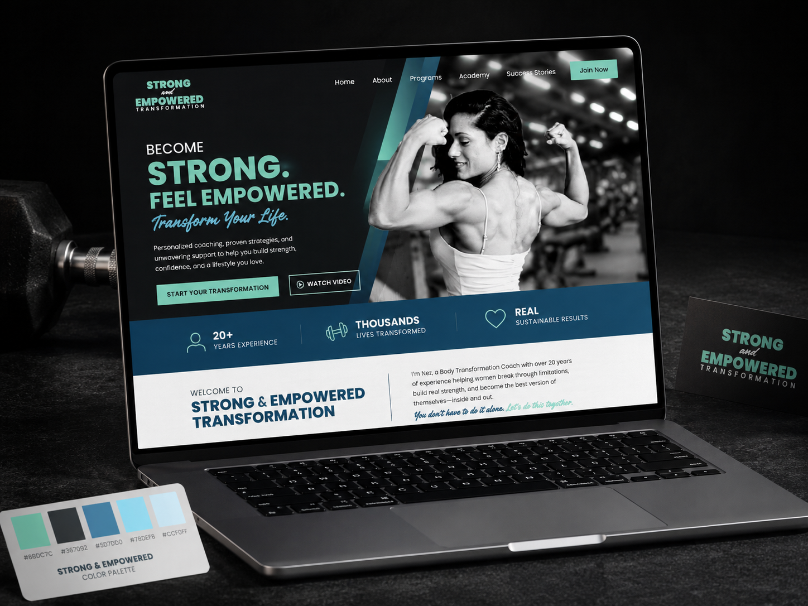
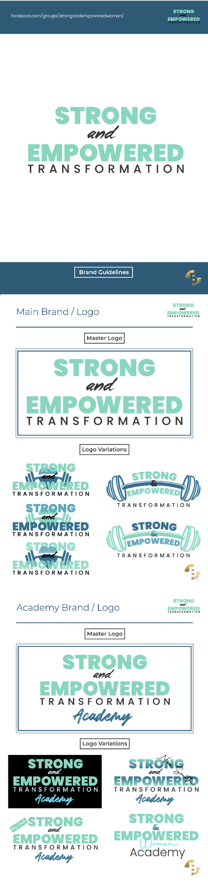
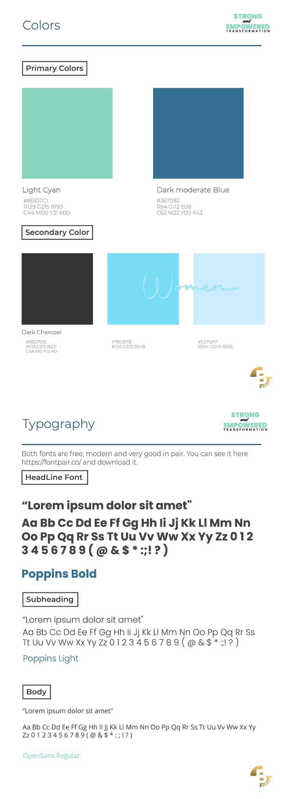
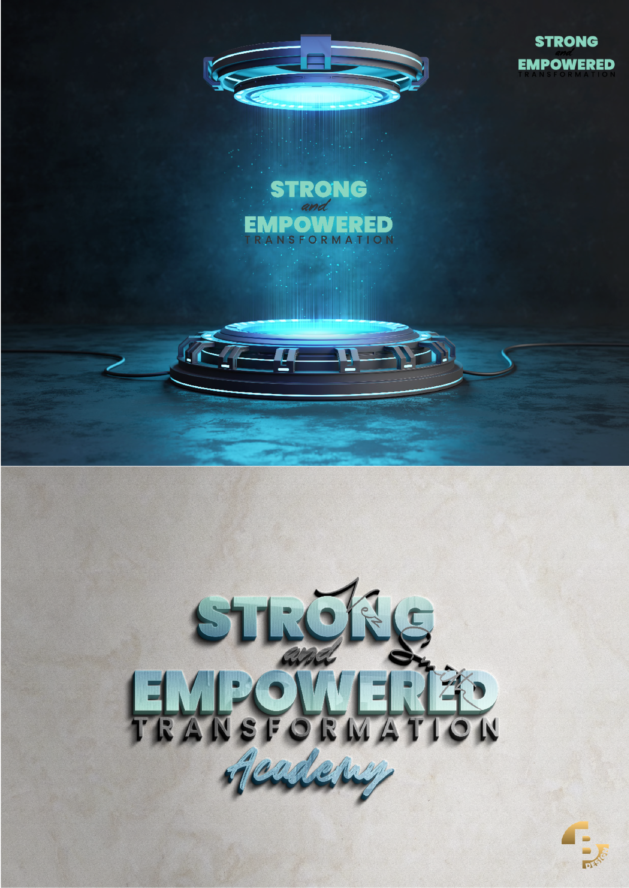
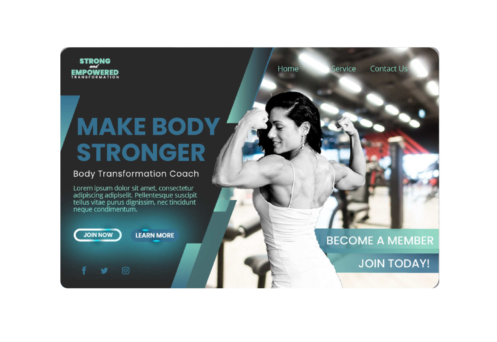

Strong Recognition
Create a memorable identity that communicates transformation, confidence and physical strength at first glance.
A complete visual and digital identity created for a US-based fitness coach developing her own transformation academy — from logo, color and typography systems to the final web design direction.

Strong & Empowered was developed as a complete branding and digital identity project for a fitness professional preparing to build a transformation-focused academy in the US market.
The work started before the website itself. The first task was to define a recognizable visual language — logo system, color palette, typography, supporting graphic elements and a clear distinction between the main transformation brand and its Academy extension.
Once that foundation was established, the identity was translated into a web direction designed around strength, confidence, transformation and direct calls to action.
The identity needed to work equally well as a personal coaching brand, an academy concept and a digital experience — without falling into the visual clichés common in fitness branding.
Create a memorable identity that communicates transformation, confidence and physical strength at first glance.
Develop logo variants and supporting elements that could work across the main brand, Academy extension and future communication materials.
Carry the same visual language into a website experience built around coaching, membership and direct user engagement.
Primary Strong & Empowered Transformation identity with a bold, compact wordmark and supporting handwritten accent.
Multiple horizontal, stacked and illustrated variants created for different communication formats and backgrounds.
A related Academy identity extending the core brand without losing recognition or visual continuity.
Mint, deep blue and charcoal supported by lighter cyan tones to create a balance between energy, wellness and strength.
A combination of strong headline typography, clean supporting text and a handwritten accent for a more personal coaching feel.
The system was prepared to work across web layouts, social content, promotional graphics and future academy materials.
The brand guide documented the complete visual system — from the master identity and Academy sub-brand to the color palette, typography and application examples — so the brand could remain consistent across different formats and future communication.



The website direction used the established identity to create a bold fitness-focused experience with clear messaging, strong photography and prominent conversion points.

Large headline statements were used to communicate strength and transformation immediately.
Coach photography was treated as a central visual asset, making the person behind the brand part of the experience.
The website reused the defined color system, typography and graphic language rather than creating a separate digital style.
Membership and coaching calls to action were made visually prominent to support a direct conversion-oriented experience.
I handled the project as a complete identity assignment rather than a standalone website design. The work started with the brand itself — visual direction, logo system, colors, typography and supporting identity elements.
I then expanded the identity into a structured brand guide and created the visual direction for the web experience, ensuring that the site felt like a natural extension of the brand rather than a separate design.
The project covered both strategic and hands-on creative work, from defining the visual system to applying it in real digital layouts and customer-facing communication.
The project resulted in a complete visual framework for the Strong & Empowered brand and its Academy extension, giving the concept a consistent identity that could move across branding, promotional communication and web design without losing recognition.